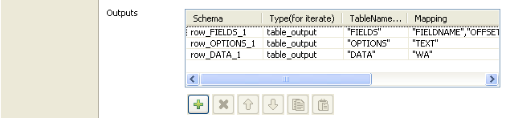

|
Famille de composant |
Business | ||||
|
Fonction |
Le composant tSAPInput se connecte à un système SAP via l’adresse IP du système. | ||||
|
Objectif |
Il permet d’extraire des données d’un système SAP à n’importe quel niveau en faisant appel à des fonctions RFC ou BAPI. | ||||
|
Basic settings |
Property type |
Peut être Built-in ou Repository. | |||
|
|
|
Built-in : Propriétés utilisées ponctuellement. | |||
|
|
|
Repository : Sélectionnez le fichier où sont stockées les propriétés du composant. Les champs suivants sont alors pré-remplis à l’aide des données collectées. | |||
|
|
|
Cliquez sur cette icône pour ouvrir l’assistant connexion de base de données et enregistrer les paramètres de connexion que vous avez définis dans la vue Basic settings du composant. Pour plus d’informations sur comment définir et stocker des paramètres de connexion de base de données, consultez le Guide utilisateur de Talend Open Studio. | |||
|
|
Use an existing connection |
Cochez la case et cliquez sur le composant de connexion adéquat dans la liste Component list pour réutiliser les informations de connexion que vous avez déjà définies.
| |||
|
|
Connection configuration |
Client : Saisissez votre code de connexion SAP habituel. Userid : Saisissez l’identifiant de connexion utilisateur. Password : Saisissez le mot de passe. Language : Spécifiez la langue. Host name : Saisissez l’adresse IP du système SAP. System number : Saisissez le numéro du système. | |||
|
|
FunName |
Saisissez le nom de la fonction que vous souhaitez utiliser pour récupérer les données. | |||
|
|
Initialize input |
Configurez les paramètres d’entrée. Parameter Value : Saisissez entre guillemets les valeurs correspondant au paramètre défini dans la colonne Parameter Name. Type : Sélectionnez le type d’entrée à récupérer. Table Name (Structure Name) : Saisissez entre guillemets le nom de la table. Parameter Name : Saisissez entre guillemets le nom du champ correspondant à la table définie dans la colonne Table Name.
| |||
|
|
Outputs |
Configurez les paramètres des schémas à transmettre en sortie. Schema : Saisissez le nom du schéma à transmettre en sortie. Type (for iterate) : Sélectionnez le type de sortie que vous souhaitez obtenir. Table Name (Structure Name) : Saisissez entre guillemets le nom de la table. Mapping : Saisissez entre guillemets le nom des champs dont vous souhaitez récupérer les données.
| |||
|
Connections |
|
Liens de sortie (d’un composant à un autre) : Row : Main, Iterate. Trigger : RunIf, OnComponentOk; OnComponentError, OnSubjobOk, OnSubjobError. Liens d’entrée (d’un composant à un autre) : Row : Iterate Trigger : Runif, OnComponentOk, OnComponentError, OnSubjobOk, OnSubjobError.
Pour plus d’informations concernant les connexions, consultez le Guide utilisateur Talend Open Studio. | |||
|
Advanced settings |
Release Connection |
Décochez cette case afin de continuer à utiliser la connexion sélectionnée, une fois que le composant a exécuté sa tâche. | |||
|
|
tStatCatcher Statistics |
Cochez cette case pour collecter les données de log au niveau du composant. | |||
|
Utilisation |
Ce composant est généralement utilisé en tant que composant de début et requiert un composant de sortie. | ||||
|
Limitation |
n/a | ||||
Les composants SAP (tSAPInput et tSAPOutput) ainsi que l’assistant SAP sont basés sur des bibliothèques validées et fournies par SAP (JCO) permettant à l’utilisateur d’appeler les fonctions RFC ou BAPI et de récupérer les données du système SAP au niveau des tables, RFC ou BAPI.
![[Note]](../images/note.png) | |
Ce scénario utilise l’assistant SAP guidant l’utilisateur à travers les différentes étapes de création de connexions SAP et des fonctions RFC et BAPI. L’assistant SAP est uniquement disponible pour les utilisateurs Talend Enterprise. Si vous êtes utilisateur de Talend Open Studio ou Talend Integration Express, vous devez configurer les propriétés du composant tSAPInput manuellement. |
Ce scénario Java utilise un assistant SAP pour créer une connexion au système SAP, appelle une fonction BAPI pour récupérer les informations d’une entreprise stockées dans le système SAP et les affiche dans Talend Open Studio.
Les figures ci-dessous affichent les paramètres du système SAP permettant d’accéder aux informations sur l’entreprise que vous souhaitez lire dans Talend Open Studio à l’aide du composant tSAPInput.
 |
Créez une connexion au système SAP à l’aide de l’assistant SAP. Dans ce scénario, la connexion SAP est appelée sap.
Appelez la fonction BAPI appelée BAPI_COMPANY_GETDETAIL à l’aide de l’assistant SAP pour accéder au document html BAPI stocké dans le système SAP et consultez les informations sur l’entreprise.
Dans le champ Name filter, saisissez BAPI* et cliquez sur le bouton Search pour afficher toutes les fonctions BAPI disponibles.
Sélectionnez BAPI_COMPANY_GETDETAIL pour afficher le schéma décrivant les informations de l’entreprise.
La vue à droite de l’assistant affiche les métadonnées de la fonction BAPI_COMPANY_GETDETAIL et vous permet de configurer les paramètres nécessaires.
La vue Document affiche le document HTML SAP de la fonction BAPI_COMPANY_GETDETAIL.
La vue Parameter fournit les informations sur les paramètres d’entrée et de sortie nécessaire à la fonction BAPI_COMPANY_GETDETAIL pour retourner les valeurs.
Dans la vue Parameter, cliquez sur l’onglet Input pour lister le ou les paramètre(s) d’entrée. Dans ce scénario, il n’y a qu’un seul paramètre d’entrée requis par la fonction BAPI_COMPANY_GETDETAIL. Ce paramètre s’appelle COMPANYID.
 |
Dans la vue Parameter, cliquez sur l’onglet Output pour lister les paramètres de sortie retournés par la fonction BAPI_COMPANY_GETDETAIL. Dans ce scénario, il y a deux paramètres de sortie : COMPANY_DETAIL et RETURN.
 |
Chacun des paramètres de “structure” est composé de nombreux paramètres “single”.
La vue Test it permet d’ajouter ou de supprimer des paramètres d’entrée en fonction de la fonction appelée. Dans ce scénario, l’objectif est de récupérer les métadonnées du paramètre “structure” appelé COMPANY_DETAIL qui est composé de 14 paramètres “single”.
 |
Dans la colonne Value de la ligne COMPANYID du premier tableau, saisissez “000001” afin de retourner les données correspondant à l’entreprise dont l’identifiant est 000001.
Dans la liste Output type en bas de l’assistant, sélectionnez output.table.
Cliquez sur Launch en bas de la vue pour afficher la valeur de chaque paramètre “single” retourné par la fonction BAPI_COMPANY_GETDETAIL.
Cliquez sur Finish pour fermer l’assistant et créer la connexion.
La connexion sap et la fonction BAPI_COMPANY_GETDETAIL apparaissent sous le nœud SAP Connections du Repository.
Pour récupérer les différents schémas de la fonction BAPI_COMPANY_GETDETAIL :
Cliquez-droit sur BAPI_COMPANY_GETDETAIL dans le Repository.
Sélectionnez Retrieve schema dans le menu.
Dans l’assistant qui s’ouvre, sélectionnez les schémas que vous souhaitez récupérer. Ici, sélectionnez les deux schémas : COMPANY_DETAIL et RETURN.
Cliquez sur Next pour afficher ces différents schémas.
Cliquez sur Finish.
Les deux schémas apparaissent sous la fonction BAPI_COMPANY_GETDETAIL dans le Repository.
 |
Dans ce scénario, l’objectif est de récupérer les données correspondant à l’entreprise dont l’identifiant est 000001 pour les afficher dans Talend Open Studio :
Dans le Repository, sélectionnez la connexion SAP que vous venez de créer et glissez-la dans l’espace de modélisation, sélectionnez tSAPConnection dans la liste de composants et cliquez sur OK. Le composant tSAPConnection portant le nom de votre connexion, sap, sera ajouté à votre Job et ouvrira une connexion SAP.
Double-cliquez sur le tSAPConnection pour afficher la vue Component :
 |
Si vous avez utiliser les métadonnées pour créer le composant, le mode Repository est sélectionné dans la liste Property Type et les champs suivants sont automatiquement renseignés. Si vous n’utilisez pas les métadonnées, sélectionnez le mode Built-In et renseignez les champs suivants manuellement.
Dans le Repository, sélectionnez le schéma BAPI_COMPANY_GETDETAIL dans le dossier sap, et glissez-le dans l’espace de modélisation, sélectionnez tSAPInput dans la liste de composants et cliquez sur OK.
Cliquez et déposez les composants tFilterColumns et tLogRow dans l’espace de modélisation.
Connectez le tSAPConnection au tSAPInput via un lien Trigger > OnSubJobOk.
Pour connecter le tSAPInput au tLogRow, cliquez-droit sur le tSAPInput, sélectionnez Row puis row_COMPANY_DETAIL_1 dans le menu et cliquez sur le composant tLogRow.
 |
Dans l’espace de modélisation, sélectionnez le composant tSAPInput et cliquez sur la vue Component pour afficher ses propriétés.
Les propriétés du composant tSAPInput apparaissent automatiquement puisque le schéma est stocké dans le dossier Metadata et que le composant est initialisé par l’assistant SAP.
 |
Dans la vue Component, cochez la case Use an existing connection et sélectionnez le composant tSAPConnection dans la liste Component list pour utiliser la connexion ouverte par le composant de connexion.
Dans la zone Initialize input, vous pouvez voir les paramètres d’entrée nécessaires à la fonction BAPI_COMPANY_GETDETAIL.
Dans la zone Outputs, vous pouvez voir les différents schémas de la fonction BAPI_COMPANY_GETDETAIL, notamment le schéma COMPANY_DETAIL que vous récupérez en sortie.
Dans l’espace de modélisation, sélectionnez le composant tLogRow et cliquez sur la vue Component pour paramétrer ses propriétés. Pour plus d’informations, consultez la section intitulée « tLogRow »
Enregistrez le Job et appuyez sur F6 pour l’exécuter.
 |
Le composant tSAPInput récupère du système SAP les métadonnées du paramètre COMPANY_DETAIL de type “structure” et le composant tLogRow affiche les informations dans la console.
Les composants SAP (tSAPInput et tSAPOutput) ainsi que l’assistant SAP sont basés sur des bibliothèques validées et fournies par SAP (JCO) permettant à l’utilisateur d’appeler les fonctions RFC ou BAPI et de récupérer les données du système SAP au niveau des tables, RFC ou BAPI.
| |
Ce scénario utilise l’assistant SAP guidant l’utilisateur à travers les différentes étapes de création de connexions SAP et des fonctions RFC et BAPI. L’assistant SAP est uniquement disponible pour les utilisateurs Talend Enterprise. Si vous êtes utilisateur de Talend Open Studio ou Talend Integration Express, vous devez configurer les propriétés du composant tSAPInput manuellement. |
Ce scénario Java utilise l’assistant SAP pour créer une connexion au système SAP et pour appeler une fonction RFC permettant de lire directement dans une table appelée SFLIGHT à partir du système SAP. Puis, il affiche dans Talend Open Studio les différentes structures de la table SFLIGHT stockée dans le système SAP.
Créez une connexion au système SAP à l’aide de l’assistant SAP. Dans ce scénario, la connexion SAP est appelée sap.
Appelez la fonction RFC appelée RFC_READ_TABLE à l’aide de l’assistant SAP pour accéder à la table du système SAP et pour visualiser sa structure.
Dans le champ Name filter, saisissez RFC* et cliquez sur le bouton Search pour afficher toutes les fonctions RFC disponibles.
 |
Sélectionnez RFC_READ_TABLE pour afficher les schémas de cette fonction.
La vue à droite de l’assistant affiche les métadonnées de la fonction RFC_READ_TABLE et permet de définir les paramètres nécessaires.
L’onglet Document affiche le document html SAP de la fonction RFC_READ_TABLE.
L’onglet Parameter fournit les informations sur les paramètres requis par la fonction RFC_READ_TABLE pour pouvoir retourner les valeurs des paramètres.
Dans la vue Parameter, cliquez sur l’onglet Table pour obtenir une description de la structure des différentes tables de la fonction RFC_READ_TABLE.
 |
La vue Test it vous permet d’ajouter ou de supprimer des paramètres d’entrée en fonction de la fonction appelée. Dans ce scénario, l’objectif est de récupérer les différentes structures de la table SFLIGHT.
 |
Dans la colonne Value de la ligne DELIMITER du premier tableau, saisissez “;” comme séparateur de champ.
Dans la colonne Value de la ligne QUERY_TABLE, saisissez SFLIGHT comme table à requêter.
Dans la liste Output type en bas de l’assistant, sélectionnez output.table.
Dans la liste Constructure|Table, sélectionnez DATA.
Cliquez sur Launch en bas de la vue pour afficher les valeurs de paramètres retournées par la fonction RFC_READ_TABLE. Dans ce scénario, le délimiteur est “;” et la table à lire est SFLIGHT.
Cliquez sur Finish pour fermer l’assistant et créer la connexion.
La connexion sap et la fonction RFC_READ_TABLE apparaissent sous le noeud SAP Connections du Repository.
Pour récupérer les différents schémas de la fonction RFC_READ_TABLE :
Cliquez-droit sur RFC_READ_TABLE dans le Repository, et sélectionnez Retrieve schema dans le menu.
Dans l’assistant qui s’ouvre, sélectionnez les schémas que vous souhaitez récupérer. Ici, sélectionnez les trois schémas : DATA, FIELDS et OPTIONS.
Cliquez sur Next pour afficher ces différents schémas.
Cliquez sur Finish.
Les trois schémas apparaissent sous la fonction RFC_READ_TABLE dans le Repository.
 |
Dans ce scénario, l’objectif est de récupérer les données et le nom des colonnes de la table SFLIGHT pour les récupérer et les afficher dans Talend Open Studio. Ainsi, intéressez-vous uniquement au schéma DATA et FIELDS :
Dans le Repository, sélectionnez la fonction RFC_READ_TABLE de la connexion sap et glissez-la dans l’espace de modélisation, sélectionnez tSAPInput dans la liste de composants et cliquez sur OK.
Cliquez et déposez deux composants tLogRow dans l’espace de modélisation.
Pour connecter les composants entre eux :
Cliquez-droit sur le tSAPInput, sélectionnez Row puis row_DATA_1 dans le menu et cliquez sur le premier composant tLogRow.
Cliquez-droit sur le tSAPInput, sélectionnez Row puis row_FIELDS_1 dans le menu et cliquez sur le deuxième composant tLogRow.
 |
Dans l’espace de modélisation, double-cliquez sur tSAPInput pour afficher ses propriétés dans la vue Component.
 |
Les propriétés du composant tSAPInput apparaissent automatiquement puisque le schéma est stocké dans le dossier Metadata et que le composant est initialisé par l’assistant SAP.
Dans la zone Initialize input, vous pouvez voir les paramètres d’entrée nécessaires pour la fonction RFC_READ_TABLE, à savoir le séparateur de champ “;” et le nom de la table SFLIGHT.
Dans la zone Outputs, vous pouvez voir les différents schémas de la table SFLIGHT, notamment FIELDS et DATA qui sont chacun dirigés vers des flux de sortie différents.
|  |
Dans l’espace de modélisation, sélectionnez les composants tLogRow et cliquez sur la vue Component pour paramétrer leurs propriétés. Pour plus d’informations, consultez la section intitulée « tLogRow »
Enregistrez votre Job et appuyez sur F6 pour l’exécuter.
 |
Le composant tSAPInput récupère le nom des colonnes de la table SFLIGHT et les données correspondantes à partir du système SAP et les composants tLogRow les affichent sous forme de table dans la console.